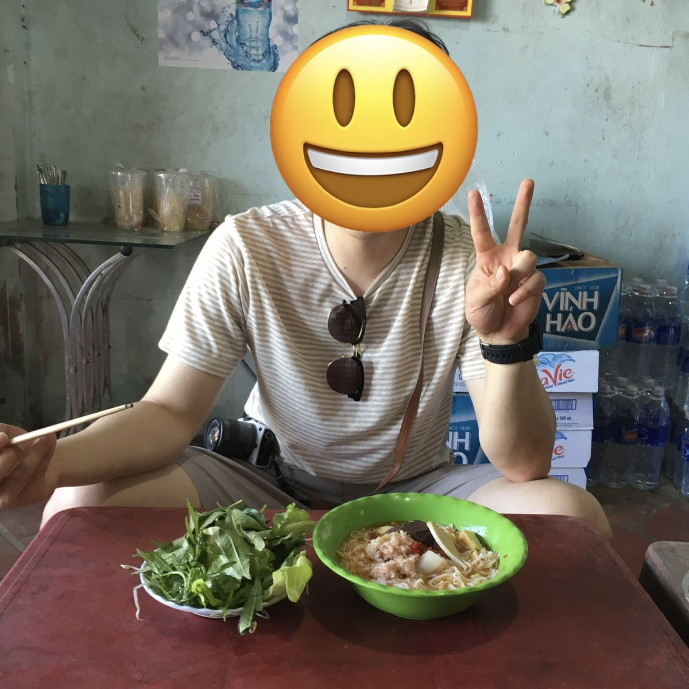
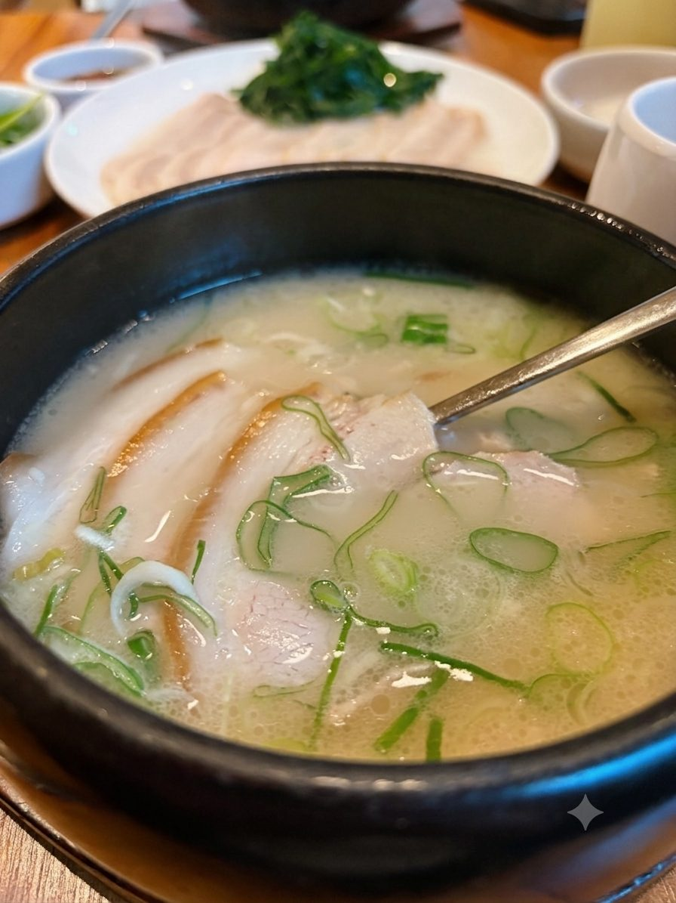
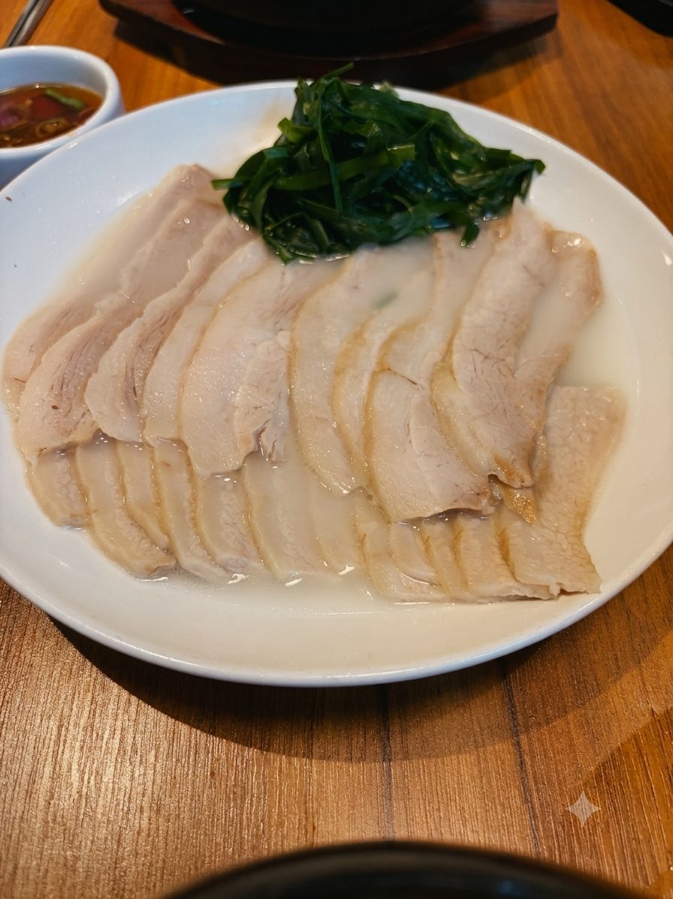
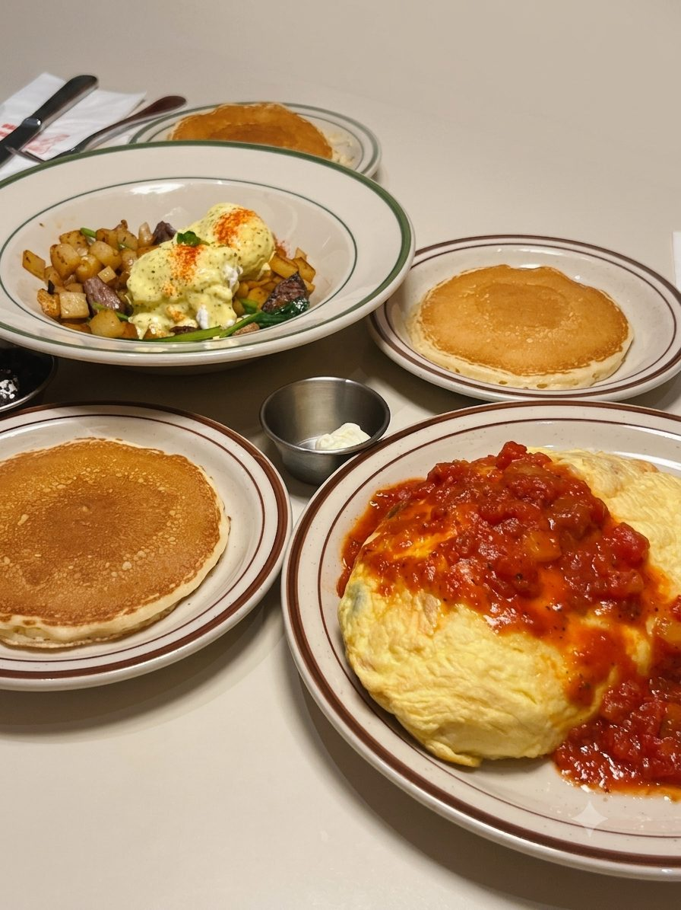
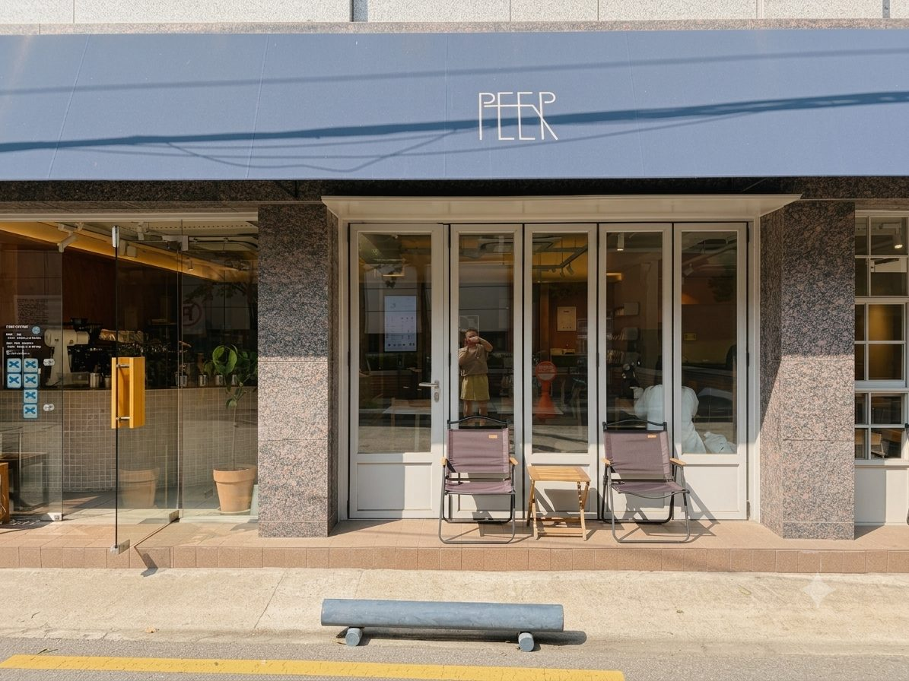
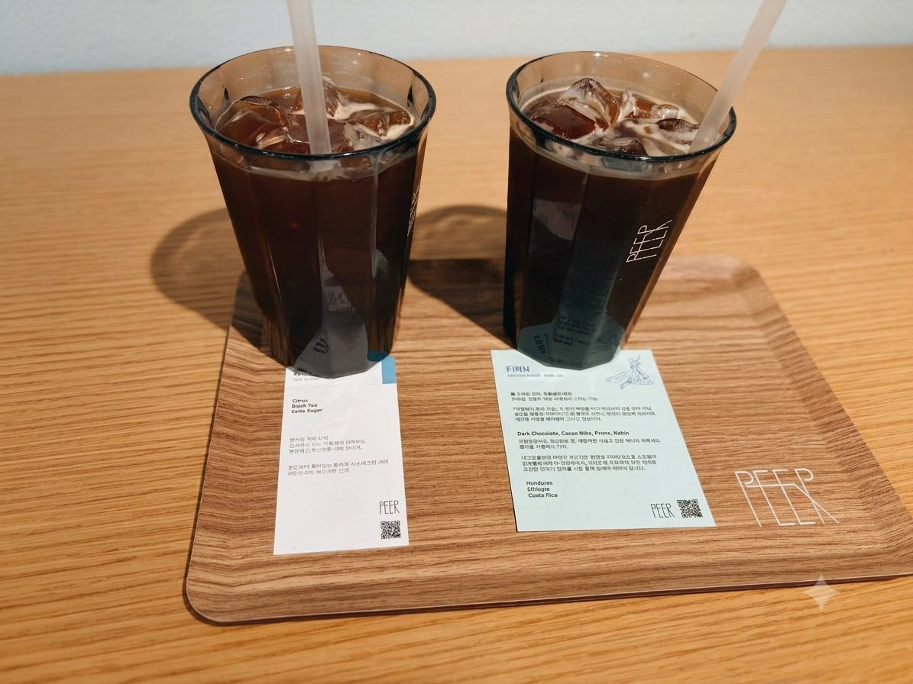
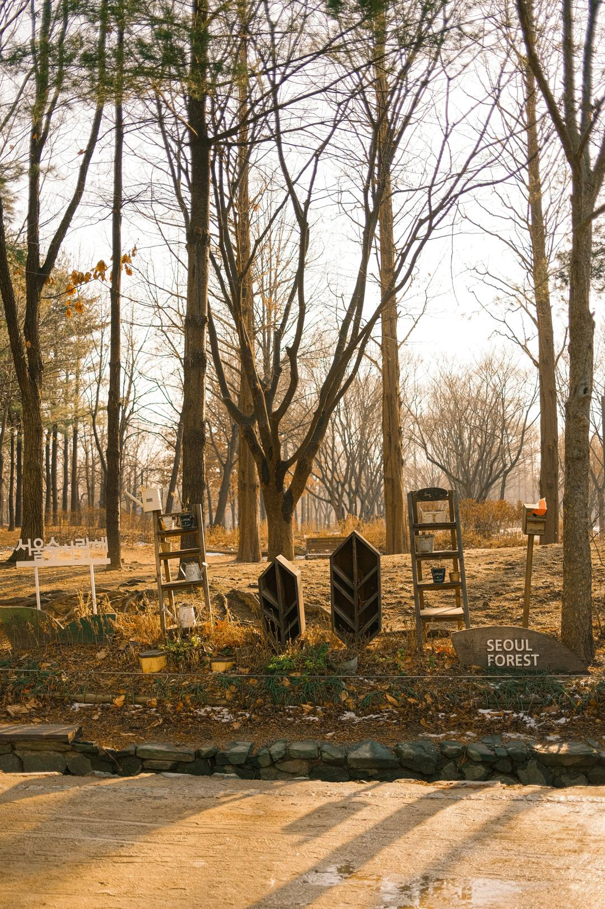

“현지 친구가 최고의 여행 가이드라고 생각합니다.”

공간이 주는 매력을 소소하게 즐기며 살다가, 우연한 기회에 이 숙소를 운영해 보게 되었습니다.
저는 새로운 동네에 여행을 가면 꼭 현지에 사시는 분들에게 평소 먹는 곳과 가는 곳을 물어봅니다. 인스타나 블로그에 나오는 곳이 아니라, 진짜 현지인들이 가는 곳에서만 느껴지는 매력을 찾는 것을 좋아하거든요.
이 방에 오신 게스트분들에게도 저의 짧은 이야기가, 잠시 머무는 이곳에서 소소한 여행 가이드가 되길 바라봅니다.
저는 평소 단백질 위주의 식사를 좋아합니다. 그래서 점심으로는 제육볶음, 돈가스, 고기가 많이 들어간 국밥을 자주 먹죠.

성수동에서 지금까지 제가 만난 가장 인상 깊었던 점심 메뉴는 안목 성수의 돼지국밥입니다. 한때 돼지국밥으로 유명한 부산에 매주 출장을 가야 했던 시기가 있었어요. 그때 택시 기사님들께 여쭤보면서 제 입맛에 맞는 돼지국밥집을 찾아다닐 정도로 좋아하는데, 그런 저에게도 안목은 정말 맛있는 집이었습니다. 1인 세트로 나오는 순대는 웬만한 순댓국 전문점보다 맛있었고요.

저는 국밥을 먹을 때 처음부터 밥을 말지 않습니다. 고기와 흰밥, 김치 삼합을 입에 넣고 국물을 따로 먹는 것을 좋아하거든요. 그러다 고기를 다 먹으면 밥 한 공기를 더 시켜 국물에 말아 먹는데, 저에게는 그게 세상 행복한 점심 시간입니다.

하나 더 말씀드리면, 아내, 딸과 주말 아침에 종종 가는 브런치 집입니다. 여러 곳에 매장이 있는 오리지널 팬케이크 하우스예요. 신혼 때 주말마다 아내와 서울의 맛있는 팬케이크집을 찾아다니다 이곳에 정착했습니다. 든든한 브런치가 당기거나, 주중에 열심히 일한 토요일 아침 가족과 기분 전환을 하고 싶을 때 가는 곳이에요. 광화문·잠실·이태원·가로수길 등 서울 곳곳에 있습니다.
저는 하루 딱 한 잔만 커피를 즐깁니다. 그 이상은 숙면에 방해가 돼서, 일상의 리듬을 지키는 데에는 저에게 딱 한 잔이 좋더라고요. 그래서 하루 한 잔, 어떤 커피를 마시느냐가 제 일상에서는 제법 중요한 일입니다.

성수동에서 가장 인상 깊었던 카페는 숙소 근처의 PEER 커피입니다. 제가 커피 맛을 예민하게 알아차리는 편은 아니지만, 피어에서 처음 마신 아이스 아메리카노는 기분이 꽤 좋아지는 맛이었어요. 무엇보다 평일에는 아침 8시 30분부터 문을 열어서, 대부분의 카페가 아직 닫혀 있는 이른 아침에도 괜찮은 모닝 커피를 즐길 수 있습니다. 참고로 여기 크루아상이 꽤 괜찮아요. 신혼여행으로 갔던 이탈리아 로마에서 크루아상과 따뜻한 라떼를 먹은 뒤로, 저는 이 조합을 무척 좋아합니다.


예전에 다녔던 회사는 서울 곳곳에 사무실이 있었습니다. 그중에서도 성수 사무실로 출근하던 시절, 저의 행복은 바로 서울숲이었어요. 어릴 적 시골에서 자란 저에게 서울이라는 도시는 동경의 대상이었지만, 한편으로는 뭔지 모르게 메마른 느낌이기도 했습니다. 사회 초년생 시절 강남역 근처에서 일할 때는 지치고 힘들어도 마땅히 갈 곳이 없었거든요.
그런데 성수에는 서울숲이 있었습니다. 성수로 출근할 때면 팀 동료들과 서울숲에서 맛있는 것을 시켜 먹거나, 점심 식사 후 산책을 할 수 있어서 행복했어요. 지금도 아내와 성수에 놀러 오면 무조건 서울숲에 들릅니다. 볼거리 가득한 성수를 다 즐기고 서울숲에서 마무리하면, 즐거움 끝에 평안함까지 누릴 수 있어서 좋아요.
저는 ‘강남스타일’로 유명한 싸이의 음악을 자주 듣습니다. 다만 대부분이 떠올리는 ‘강남스타일’ 같은 곡이 아니라, 그의 다른 노래들을 좋아해요. 싸이의 노래 중에는 텐션을 끌어올리는 곡 말고도 감성적인 곡이 꽤 많거든요.
저는 싸이가 우리 일상과 인생에서 느끼는 다양한 감정 대부분을 노래한 가수라고 생각합니다. 화려한 무대 위의 싸이가 아니라, 아버지를 떠올리고 지나간 시간을 돌아보는 싸이의 노래들을 들으면 제 삶에서 마주했던 감정들을 다시 생각하게 돼요. 그래서 혼자 드라이브할 때면 종종 이 노래들을 듣곤 합니다.
마지막으로, 이 방에 머무는 동안 제 이야기 속 어딘가에 한 번이라도 가보시거나, 이곳에 머물며 좋았던 것들을 아래에 살짝 들려주세요. 그러면 저에게는 가장 반가운 소식이 될 것 같습니다 :)